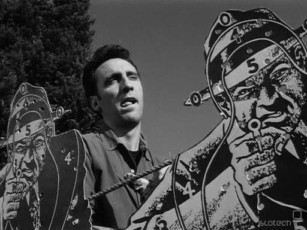
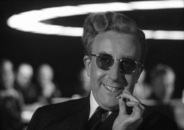
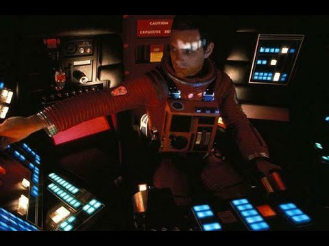
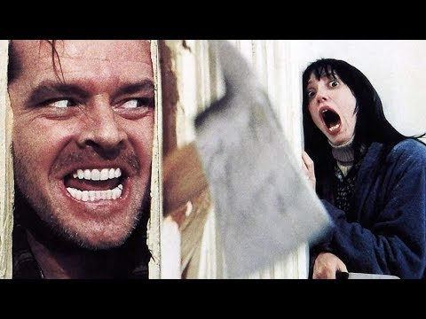

2001СтильФормыDOM: чтениеDOM: латиницаЗадача 1012ВикипедияIMDb
2001СтильФормыDOM: чтениеDOM: латиницаЗадача 1012ВикипедияIMDb
Фильмы
Фильмография
| Кадр | Название | Коротко | Ссылка |
|---|---|---|---|
 | Ограбление (1956) | Нуар об ограблении ипподрома | IMDb |
 | Доктор Стрейнджлав (1964) | Чёрная комедия о ядерной катастрофе | IMDb |
 | 2001: Космическая одиссея (1968) | Фантастика о происхождении разума | Ниже на странице |
 | Сияние (1980) | Хоррор в отеле «Оверлук» | IMDb |
«2001: Космическая одиссея»
Сценарий Кубрик писал вместе с Артуром Кларком. За спецэффекты фильм получил «Оскар».
- «Рассвет человечества».
- Космическая станция.
- Миссия «Дискавери»:
- экипаж;
- компьютер HAL 9000.
2001 | Сияние |